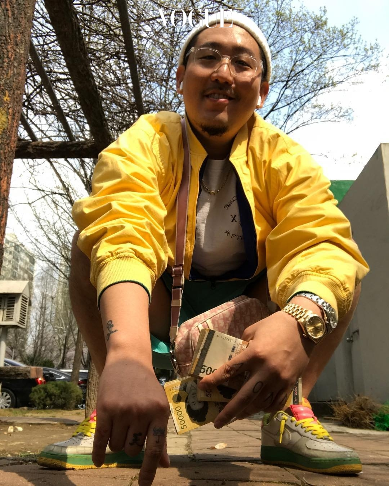

이름
염따
생년월일
1984년 4월 20일
직업
래퍼
설명
래퍼이자 데이토나 엔터테인먼트의 공동 CEO.
2000년대 초부터 활동하였으나 긴 암흑기를 거쳤고, 지난 2010년대 말
성공을 거둔 대기만성형 음악가이다.
'빠끄'라는 특유의 추임새가 유명하며, 대표곡으로는 '돈 Call Me'가 있다.
역사가 깊은 배재고를 졸업하였으며, 강동구에 대한 애향심이 크다고 한다.